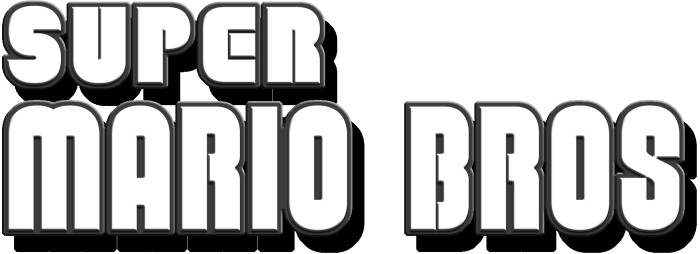

Mario é um encanador qualquer no Brooklyn ao lado de seu irmão Luigi. Um dia, eles vão parar no Reino dos Cogumelos, onde Mario precisa encontrar seu irmão com a ajuda da Princesa Peach e do Toad.

X

Mario é um encanador qualquer no Brooklyn ao lado de seu irmão Luigi. Um dia, eles vão parar no Reino dos Cogumelos, onde Mario precisa encontrar seu irmão com a ajuda da Princesa Peach e do Toad.